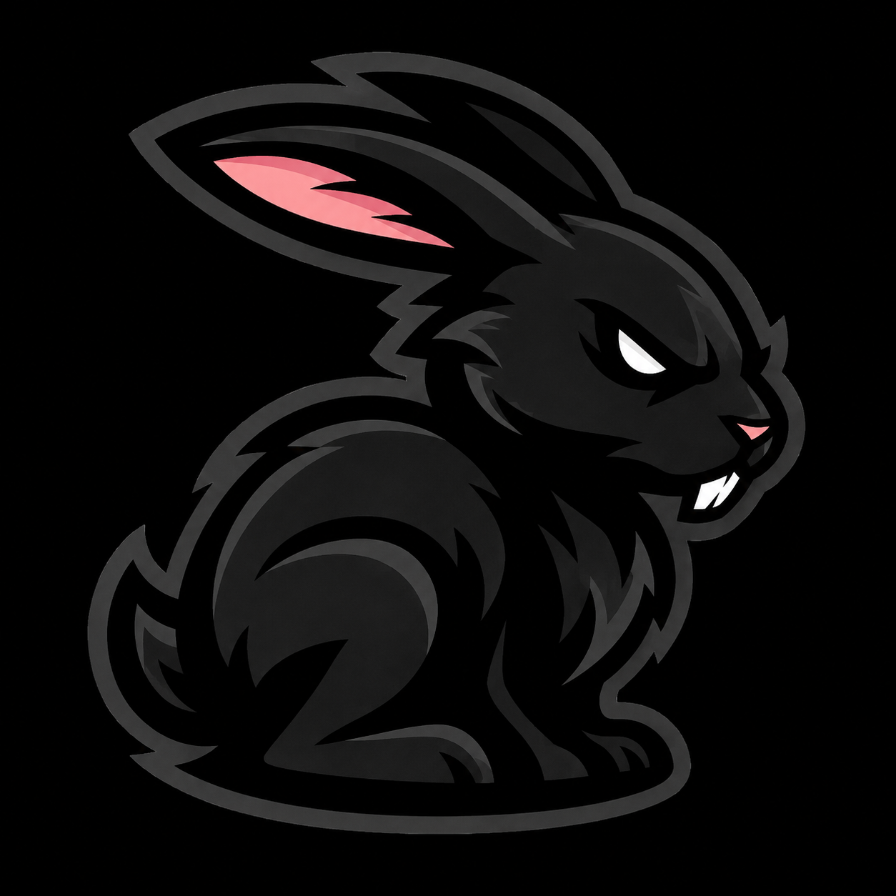

Búsqueda instantánea
Filtra mientras escribes, sin importar mayúsculas ni tildes, y resalta lo que coincide.

CheatAllEscribe tu usuario, IP y puerto y los comandos se adaptan solos.
Filtra mientras escribes, sin importar mayúsculas ni tildes, y resalta lo que coincide.
Cada comando se copia al portapapeles con un botón, listo para pegar en tu terminal.
Organizados por herramienta y sección: conexión, claves, túneles, subidas, descargas y más.
Limita los resultados a una herramienta (SSH, FTP, Ubuntu, Windows, Rutas…) con un solo toque.
Pulsa / para ir al buscador y Esc para limpiarlo, sin coger el ratón.
Cambia de tema con el botón de la cabecera, con iconos de sol y luna animados.